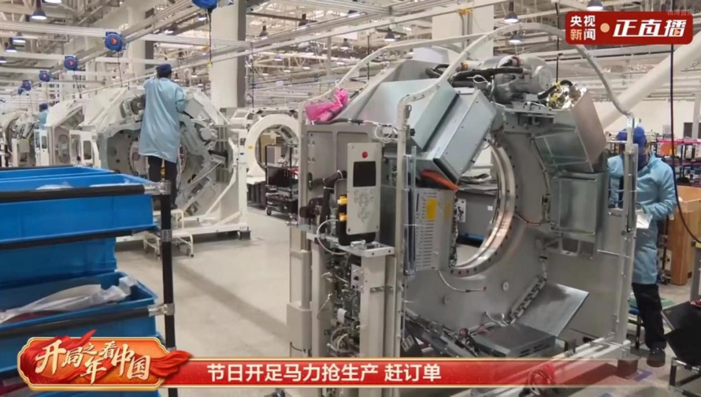
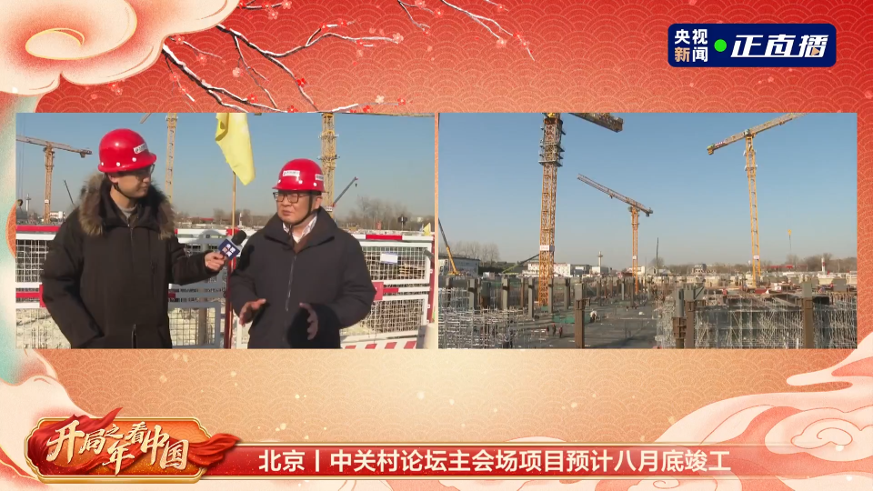

2023年来了，这是全面贯彻落实党的二十大精神的开局之年。
沐浴着新年的第一缕阳光，在街头巷尾、在商场集市、在工厂车间、在科研实验室……是热气腾腾、是车水马龙、是争分夺秒、是全力坚守；全国各地、各行各业，都铆足了劲儿，要把经济发展的节奏拉上来……美好，就在这人人向往的人间烟火里；希望，就在这生机勃勃的中华大地上。这，就是咱中国人朝气蓬勃的精气神儿！
捕捉开局新气象，记录时代最强音。中央广播电视总台央视新闻推出《开局之年看中国》主题报道，充分释放新媒体融合传播的优势，以特别直播、视觉产品、短视频、评论等形式，带着网友们在新年伊始感受了一把中国力量、中国活力和中国温度。
截至目前，微博主话题“开局之年看中国”累计阅读量已超1.6亿，相关直播在线观看量 6561万，《开局之年看中国丨每一颗汗水浇灌的种子都会在春天发芽》等十余条内容获得全网置顶推荐，网友留言互动热烈，构筑起了线上线下“同心圆”。
开局之年，我们看到了一个怎样的中国？
迎着第一缕阳光，出发!
观看《开局之年看中国》最大的感受，便是它感性，既浪漫，又温暖，安抚着每一颗渴望爱与关怀的心灵。天安门广场的五星红旗迎着朝阳、云南梅里雪山的日照金山、上海金山区的粉红色日出……镜头里的每一场日出，都呈现出新年的希望与美好。

这缕阳光中，有全国各地的乡土风情。江西婺源的村民们“晒冬”迎新年，腊味飘香；东北市民们在街头围着粘豆包、油炸糕，期待美食吃出好兆头；全国各地机场大厅里的人流熙熙攘攘，等待归乡……新年的烟火气，包裹着追求美好的甜蜜与力量。
这缕阳光中，更有中国人奋进的身影。在江苏，企业和招商人员“包机出海”抢订单，推动新项目落地生根；在浙江，政府机构鼓励本土企业“走出去”，吸引海外企业“请进来”，营造良好营商环境；在吉林，全国产能最大的碳纤维生产基地里，员工们正在用奋斗为节日增添特别的色彩……


《开局之年看中国》感人细腻：既能看到过去一年里大家的不易，也能看到充满希望的小细节。它就像冬日里的暖阳，有忠实记录，亦有感性抒怀，用国人最平凡的一件件小事，与网友产生着强烈的共鸣。
加把劲、加油干!
《开局之年看中国》不仅是“心思细腻”的，更是“嗅觉敏锐”的，它抓住了多地市场呈现的回暖迹象，捕捉中华大地上 “加把劲、加油干”的欣欣向荣景象。

跟着直播镜头，逛浙江金华蔬菜批发市场，看“菜篮子”里物丰货足、年味也足；到上海快递配送中心，跟着快递小哥开启“送送送”模式；看正在抢工赶订单的沈阳汽车配套产品制造企业，每小时可生产43套汽车座椅……
一批重点工程建设的“进度条”也在不断刷新：未来首都市民的“科技会客厅”——中关村论坛永久会址主会场，正赶工期；荆荆高铁重要节点性工程——新建荆州站北站房，正冲刺项目主体结构封顶；“空中丝路”新驿站西安咸阳国际机场，三期扩建工程正在如火如荼建设中……

在经济回暖的大背景下，普通百姓的烟火气也随之而来。微视频《“年夜饭基本订满了”｜开局之年看中国》记录下了这些顾客最真实的感受：“到人多的地方，大家认识的不认识的能聚在一起，感受到生活的快乐。”“我觉得咱们中国人无论生活还是经济，非常有韧劲儿。”
镜头里，我们看到了什么？《开局之年看中国》主题海报通过9个关键词——活力、生产力、实力、潜力、创造力、发展力、动力、魄力、凝聚力——盘点了中国各个领域的发展成绩，对此做出了回答： 大国重器彰显中国实力，我国经济长期向好的基本面依然不变，14亿多中国人同舟共济、众志成城的凝聚力始终都在。
 全力以赴、提振信心在行动!
全力以赴、提振信心在行动!
开局之年看中国，关键看精神焕发、英雄辈出、特别有神采的中国人。
新年到来之际，14亿多中国人收到了国家主席的美好祝福，更激发起奋进的力量。央视新闻稍后推出的系列特稿及评论文章，将这股奋进之力接续传递： 《央视新闻2023年新年献词丨开局知奋进中国再出发》展望了我们如虹的新征途，加满开新局、开好局的精神气；《国际锐评丨2023，中国送给世界一份宝贵的新年礼物》，强调一个与世界共赢的中国，将为全球繁荣发展注入更多正能量； 《热评丨开启新一年的中国开启更美好的生活》围绕各地迎新年的景象，为网友们加油打气：以持续不断的奋斗，把宏伟目标变为美好现实。
经济报道短视频《提振信心看行动》系列对接沟通重庆、江苏、浙江等十几个省份，根据各省经济发展特点，多维度展现各地强经济的力度，记录开局之年的信心之源： 每一个鲜活生动的故事、每一条走心的经验背后，都有一群脚踏实地、真抓实干的中国人。
截至目前，前八期报道推出后被全网置顶转发，网友纷纷留言点赞“不懈努力的中国人”，祝福“2023新的一年，经济好、国运兴隆、世界太平”，并表达支持“让中小企业活起来”“奋发有为，行稳致远；勇于担当，勇挑大梁”！
为了更美好的明天，每一位奋斗者都在担起各自的责任。如何展现个人的拼搏奋斗与国家的发展紧密相连？央视新闻全屏传播联盟发起“开局之年看中国”主题行动，制作 “全力以赴 你会很酷”“全力以赴 大展宏兔”和“全力以赴干劲卯足”三组海报，在30座城市10万张屏幕滚动播出，引来了众多网友真挚热情的留言：“心往一处想，劲往一处使，中国人民就可以创造更伟大的人间奇迹”“齐众心、汇众力、聚众智，同心共圆中国梦”……
开局之年看中国：30座城市10万张大屏，激发“全力以赴”的中国力量
开局之年看中国，看的是中国经济的“加速度”，看的是咱中国人用“力”写下的新征程。
“明天的中国，奋斗创造奇迹。”“明天的中国，力量源于团结。”“明天的中国，希望寄予青年。”
大河奔流，绵长壮阔；人间烟火，最抚人心。《开局之年看中国》激活了我们对未来的信心与憧憬，凝聚起了万众奋斗的团结之力。与时间赛跑的中国，正在以“敢教日月换新天”的魄力，一步一个脚印地将梦想变为现实。
总监制 ▏杨 华 钱 蔚 张利生 窦小文
监 制 ▏徐朝清 龚 铭 张 鸥 闫 爽
主 编 ▏降碧桐 王 竹 张亚东
撰 稿 ▏赵 静 张 洋 于莎莎
编 辑 ▏李懿熙 江天一 孙嘉瞳 张 涛
来源：CMG观察